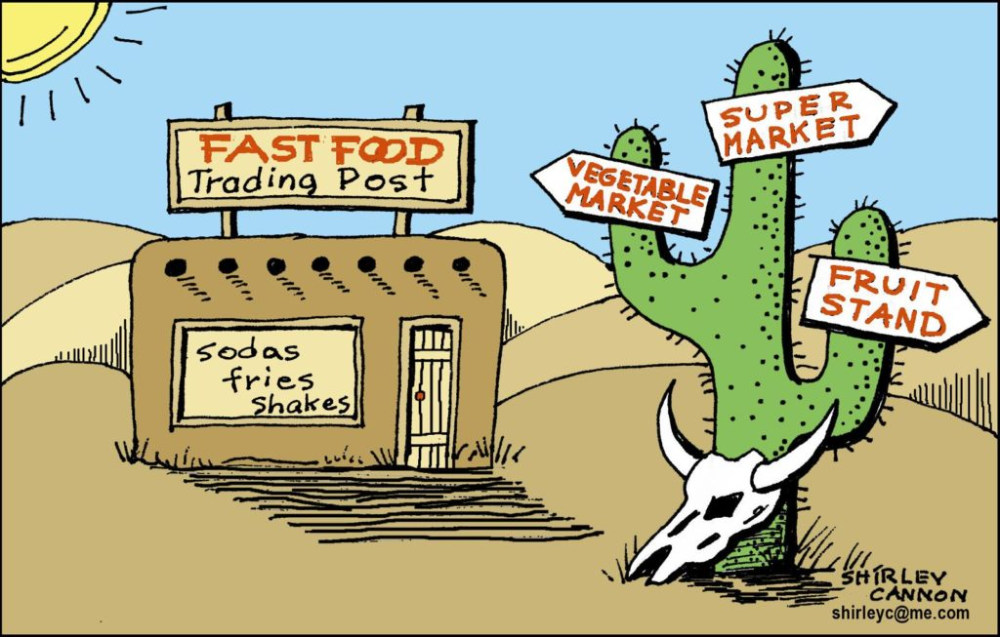
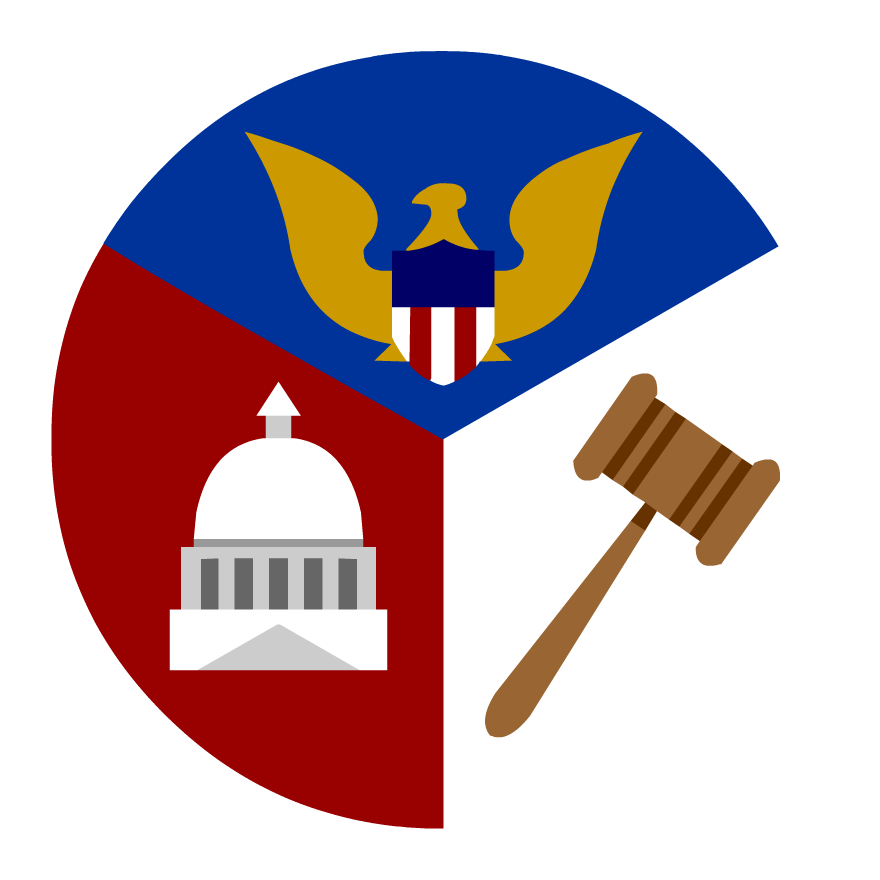

Assy. Sterley Stanley Experience
During my time as a Legal Intern at Assy. Sterley Stanley's office, I gained invaluable experience in legislative processes and cybersecurity education within a governmental context.
Legislative Collaboration
My primary responsibility involved collaborating with government officials to craft bills designed to benefit New Jersey residents. This experience provided me with a deep understanding of the legislative process and the intricacies of drafting effective legislation.
Cybersecurity Education
In addition to legislative work, I played a crucial role in enhancing the office's cybersecurity posture. By facilitating communication and education on best practices and protective measures, I helped mitigate digital threats such as phishing, malware, and social engineering attacks.
Conclusion
My internship at Assy. Sterley Stanley's office was a pivotal experience that broadened my understanding of both legislative processes and cybersecurity in a governmental setting. The skills and knowledge I gained will undoubtedly benefit my future endeavors in the field of cybersecurity and beyond.